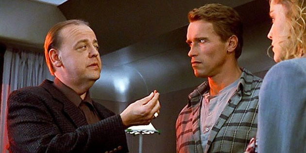

Knowledge and identity
Juan Camilo Espejo-Serna
Universidad de la Sabana
Plan
- Overview of the film
- What is knowledge?
- What is personal identity?

Write in chat a one-line summary of the plot of TOTAL RECALL
(A good one :P).
The film considers two questions with philosophical import.
- One is about our knowledge of reality.
- The other is about identity.
They are not quite the same: the one depends on the other.
The film makes use of a skeptical scenario in order to make a point about identity.
Skepticism, in TOTAL RECALL, is not an end in itself but a means to further philosophical claims.
Though not quite as secondary as in THE MATRIX, skepticism in TOTAL RECALL plays second fiddle to the main topic of identity.
To consider these topics we will first talk about an important question in philosophy: What is knowledge?
Let us consider a crucial scene from the film.
"You're not here."
At this point in the film, is Doug justified in trusting Dr. Edgemar?
What is the most rational thing for Doug to believe about the experiences he has had between Recall and his meeting Dr. Edgemar?
Compare this to the scene in THE MATRIX where Neo is also offered a red pill in order to snap out of delusion.
Doug refuses to accept what he is being told. Neo accepts what he is being told. Who is correct?
Neither
They both act upon belief that stops short of knowledge.
believing something ≠ knowing something
Consider a multiple choice exam where you have given an answer to all the questions but where you only know the answer to the first half.
- The answers from knowledge are certainly TRUE. The other answers might be false or true.
- The answers from knowledge are certainly true and JUSTIFIED. Even if the other answers happen to be true, you have no proper warrant that they are true.
Knowledge is TRUE: to know something is to know something true.
Knowledge is not by chance: to know something is to know in a way that is not just product of luck.
K = JTB
Knowledge is Justified True Belief
Belief
What is it to believe something?
believing something ≠ desiring something
True belief
What is it to believe truly?
Truth is to think of what it is that it is and of what it is not to think that it is not.
Justified true belief
What is it to believe truly and with justification?
Truth is to think of what it is that it is and of what it is not to think that it is not.
Justification implies reason.
the JTB account does not quite work as a characterization of knowledge because of the
Gettier cases
- Smith is told by the CEO of the company that Jones will get the job.
Smith believes so.
- Smith sees that Jones has ten coins in his pocket.
Smith believes so.
- Smith infers that the person who will get the job has ten coins in his pocket.
Smith believes so. Call this the G belief
- Unbeknownst to Smith he gets the job and he has ten coins in his pocket.
- The G belief is true.
- The G belief is justified.
- The G belief is not knowledge.
There have been several attempts to describe further conditions on knowledge in order to respond to Gettier's challenge.
K = true, sensitive and safe belief.
(1) p is true.
(2) S believes that p.
(3) If p were false, S would not believe that p (sensitivity)
(4) If S were to believe that p, p would not be false. (safety).
Simple Causal Theory of Knowledge:
S knows that p iff p is true;
S believes that p;
S’s belief that p is caused by the fact that p.
Knowledge as primitive
We should not attempt to understand knowledge in terms of belief plus something else. Rather, we should attempt to understand justification and belief, for example, in terms of knowledge. Knowledge is that in terms of which we explain all other epistemological notions.
Epistemology deals with these issues.
What is personal identity?
The questions about knowledge help us see the questions about identity.
Are Doug and Hauser different people?
"Your whole life is just a dream."
Is Doug right in believing Lori?
At this point, does Doug know that he is not married to Lori?
Watch the following clip from the film.
"I've been playing for the wrong team"
Is Doug right in believing Hauser?
At this point in the film, does Doug know that he knows what is necessary to take Cohaagen down?
At this point in the film, is Doug justified in trusting Hauser and taking the strange instrument and shove it up his nose?
Watch the following clip from the film.
"It's my body you have here."
Set aside the moral issues involved in Hauser's plan, consider it was a noble cause. Were you in Hauser's position, would you erase your memories in order to carry out your plans?
Is Doug Doug? Or is he really Hauser?
There are several ways to answer
Same psychology? Same person.
Same living being? Same person.
Same actions? Same person.
Short videos
We have been talking about knowledge without giving any characterization of it. Think about a moment in your life when you thought you knew something ABOUT YOURSELF but found out you didn't? What were you missing in order to know? Had you had that before, would you have had knowledge?
Next week
- Why is reality important?